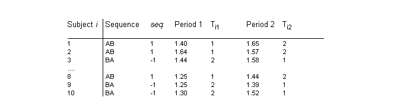
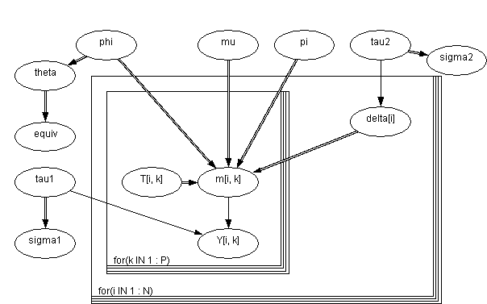

![[equiv0]](equiv0.bmp) Equiv: bioequivalence in a
Equiv: bioequivalence in a
cross-over trial
The table below shows some data from a two-treatment, two-period crossover trial to compare 2 tablets A and B, as reported by Gelfand
et al
(1990).

The response Y
ik
from the
i
th subject (
i
= 1,...,10) in the
k
th period (
k
= 1,2) is assumed to be of the form
Y
ik
~ Normal(m
ik
,
t
1
)
m
ik
=
m
+ (-1)
T
ik
- 1
f
/ 2 + (-1)
k - 1
p
/ 2 +
d
i
d
i
~ Normal(0,
t
2
)
where T
ik
= 1,2 denotes the treatment given to subject
i
in period
k
,
m, f, p
are the overall mean, treatment and period effects respectively, and
d
i
represents the random effect for subject
i
. The graph of this model and its
BUGS
language description are shown below
Graphical model for equiv example

BUGS
language for equiv example
model
{
for( k in 1 : P ) {
for( i in 1 : N ) {
Y[i , k] ~ dnorm(m[i , k], tau1)
m[i , k] <- mu + sign[T[i , k]] * phi / 2 + sign[k] * pi / 2 + delta[i]
T[i , k] <- group[i] * (k - 1.5) + 1.5
}
}
for( i in 1 : N ) {
delta[i] ~ dnorm(0.0, tau2)
}
tau1 ~ dgamma(0.001, 0.001) sigma1 <- 1 / sqrt(tau1)
tau2 ~ dgamma(0.001, 0.001) sigma2 <- 1 / sqrt(tau2)
mu ~ dnorm(0.0, 1.0E-6)
phi ~ dnorm(0.0, 1.0E-6)
pi ~ dnorm(0.0, 1.0E-6)
theta <- exp(phi)
equiv <- step(theta - 0.8) - step(theta - 1.2)
}
Note the use of the step function to indicate whether
q
= e
f
lies between 0.8 and 1.2 which traditionally determines bioequivelence.
Data
( click to open )
Inits for chain 1
Inits for chain 2
( click to open )
Results
A 1000 update burn in followed by a further 10000 updates gave the parameteres estimates
![[equiv3]](equiv3.bmp)